A flow model generates images by starting from Gaussian noise and following a learned velocity field until the noise turns into a clean image. In Part A I use a pretrained text to image flow model, PixNerd, to denoise and generate images, implement classifier free guidance, and then use the same sampler to edit photos, turn drawings into realistic images, and make visual anagrams and hybrid images. In Part B I train my own flow matching model on MNIST, starting from a single step denoiser and ending with a class conditioned UNet that can generate any digit on request.
Throughout Part A, time t runs from 0 (pure noise) to 1 (a clean image), and a noisy image is a linear mix of the two: xt = (1 − t)ε + t x1. The model takes a noisy image, the time, and a text prompt, and predicts the velocity x1 − ε that points from the noise toward the clean image. I used the Mona Lisa as my own image for Sections 1.1 to 1.5, a fixed seed of 180 for the noise, and the prompt "a high quality photo" wherever a prompt was needed but not specified.
I sampled one Gaussian noise tensor ε and reused it to build xt at t = 0.25, 0.50, and 0.75 with the interpolation above. Larger t keeps more of the image: at t = 0.25 the painting is barely visible under the noise, while at t = 0.75 it is clearly recognizable with a grainy texture.
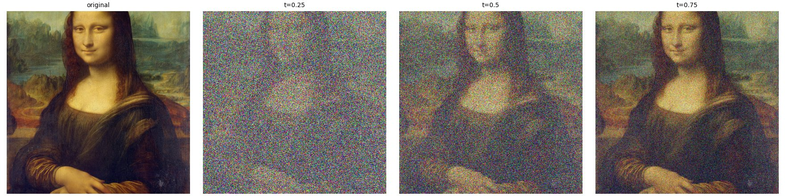
As a baseline with no learned model, I first divided each noisy image by t to restore the image's amplitude, since the image contribution in xt is scaled by t, and then applied a Gaussian blur. For each t I tried σ = 1, 2, 4, 8, and 16 and kept the blur with the lowest mean squared error against the original. The best σ was 16 at t = 0.25, 8 at t = 0.50, and 2 at t = 0.75, so the noisier the input, the heavier the blur needed. Blurring removes noise by averaging it out, but it removes detail at the same rate, so at t = 0.25 the result is only a smear of the painting's colors.
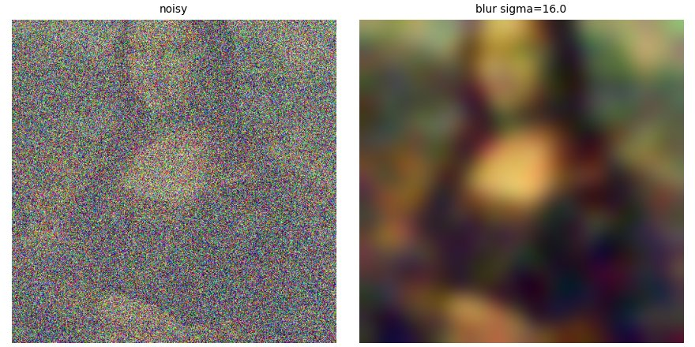
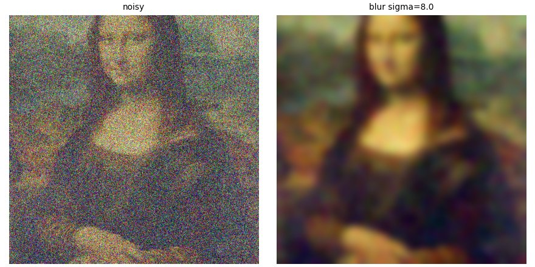
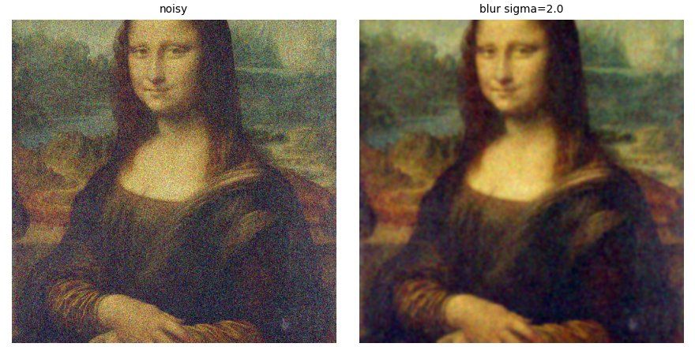
With the pretrained model I can estimate the clean image from a single velocity prediction: x̂1 = xt + (1 − t) vθ(xt, t, c), which follows the predicted velocity for the remaining 1 − t of the path in one jump. The estimates are far better than the blur baseline at every noise level, but they are smooth and painterly, especially at t = 0.25, because many different clean images are consistent with a very noisy input and the model predicts something like their average. At t = 0.75 the estimate is close to the original.
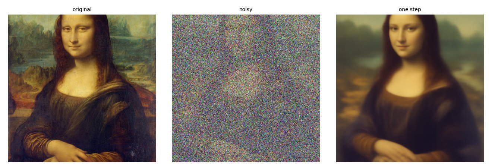
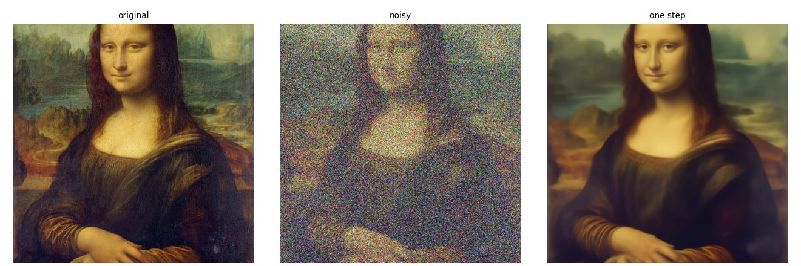
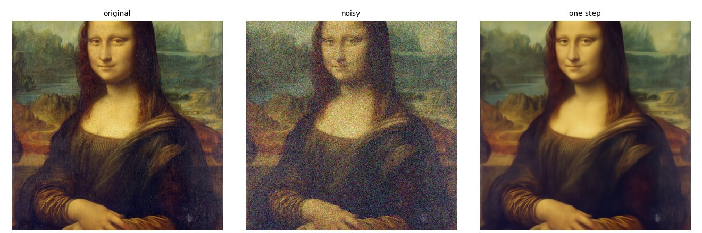
Since I know the original image and the noise, the true velocity is vgt = x1 − ε, so the update that would recover the original exactly is (1 − t)vgt = x1 − xt. I compare it with the model's update (1 − t)v̂t, and the error map is the per pixel RMS difference between the two across the RGB channels. All updates share one signed color scale with zero at middle gray, and all error maps share the same limits. At t = 0.25 both updates look mostly like noise, because the main job of the update is to cancel the noise, and the error is largest. The error shrinks as t grows, since there is less of the path left to cover and the noisy image says more about the original. Within each image the error concentrates on edges and fine texture, such as the outline of the face, the hands, and the background landscape, while smooth regions like the cheeks and the dark dress stay low.
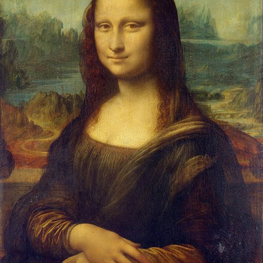
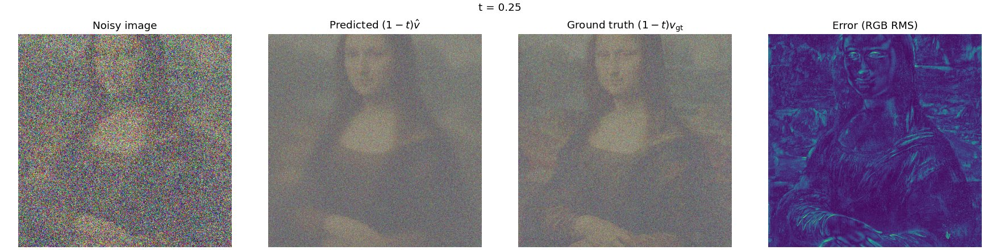
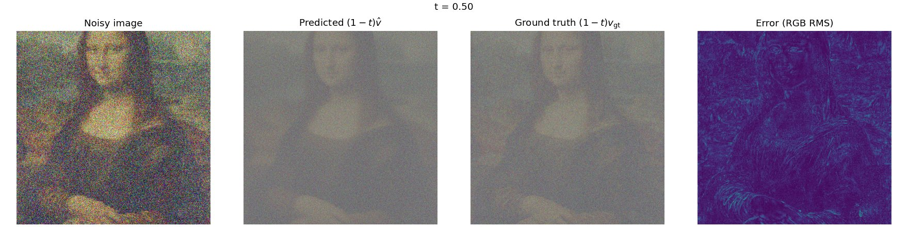
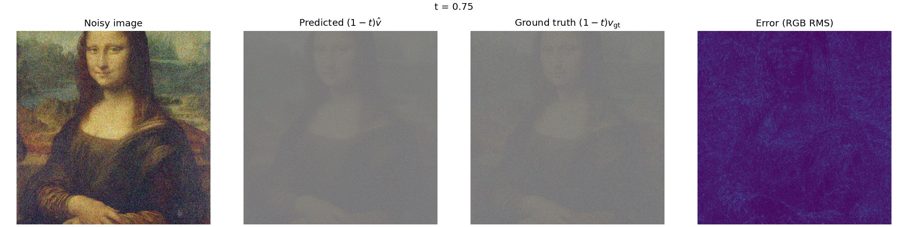
One step denoising is inaccurate because the learned velocity changes along the path, so instead I take small Euler steps xt+h = xt + h vθ(xt, t, c) with h = 0.02, recomputing the velocity after each update and shortening the last step so the trajectory ends exactly at t = 1. Starting from the saved t = 0.50 input, this takes 25 updates. The trajectory below shows the initial state, every fifth update, and the final image.
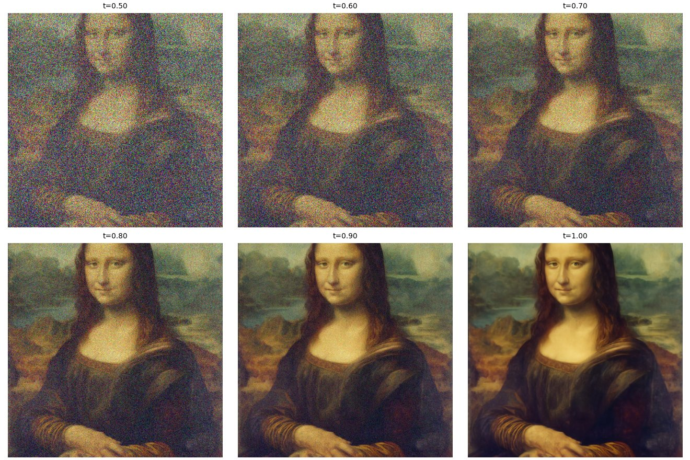
Compared on the same t = 0.50 input, the Euler result is much sharper than the one step estimate and far better than the blur. The mean squared errors against the original were 0.0112 for the blur, 0.0066 for one step, and 0.0073 for Euler, so the Euler result is slightly further from the original pixel by pixel even though it looks the most like a real painting, because a sharp image with invented brush strokes can differ more from the original than a blurry average does while looking more plausible.
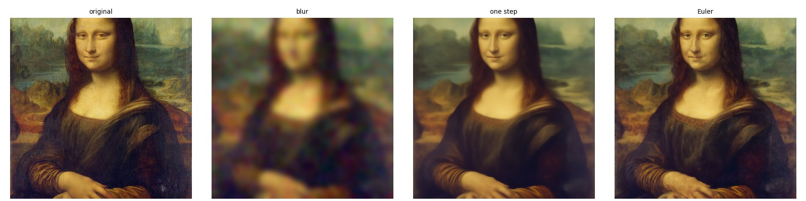
Running the same Euler sampler from pure noise at t = 0 generates an image from scratch. With the prompt "a high quality photo" and seeds 180 to 184, all five samples came out as people, mostly portraits, and some of them are distorted, like the tilted face in the first sample. The generic prompt gives the model very little to go on, so it falls back on the kind of image it saw most often, and plain conditional sampling follows the prompt only weakly.
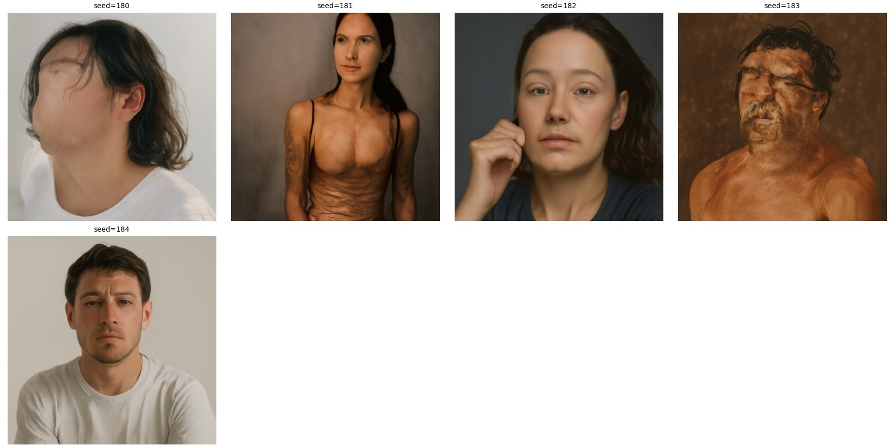
Classifier free guidance evaluates the model twice at the same image and time, once with the prompt to get vc and once with the empty prompt to get vu, and combines them as vcfg = vc + w(vc − vu). The difference vc − vu is the part of the velocity that comes from the prompt, and w scales it up, so w = 0 gives ordinary conditional sampling and w = 7 pushes the sample much harder toward the prompt. Starting from the same five noises as Section 1.6, the guided samples are all clean, sharp photographs of faces with strong contrast and no distortions, but they are also much more alike, with every one a head and shoulders portrait against a plain background, which is the usual tradeoff of guidance: it gives up diversity for image quality and prompt alignment.
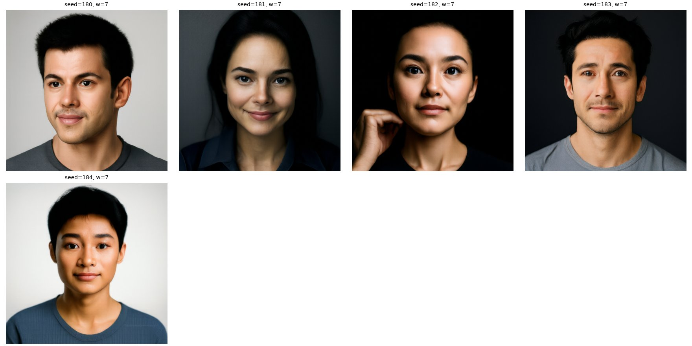
To edit an image, I noise it to a starting time tstart with the interpolation from Section 1.1 and then run the CFG Euler sampler from there to t = 1. The model only sees the noisy version, so it produces a clean photo that agrees with whatever survived the noise, and the starting time sets how much that is. Noise destroys fine detail first and large shapes last, so at a low starting time only the rough layout and colors remain and the model invents the rest, while at a high starting time most of the image survives and the model only cleans it up. Each image below was edited at starting times 0.02, 0.04, 0.06, 0.10, 0.14, 0.25, and 0.50 with the prompt "a high quality photo". At 0.02 almost nothing of the original is left, so the result is an unrelated image, which for this model is usually a portrait. From 0.04 to 0.14 the model keeps the composition but replaces the content, and by 0.25 the original comes back with reinvented details.
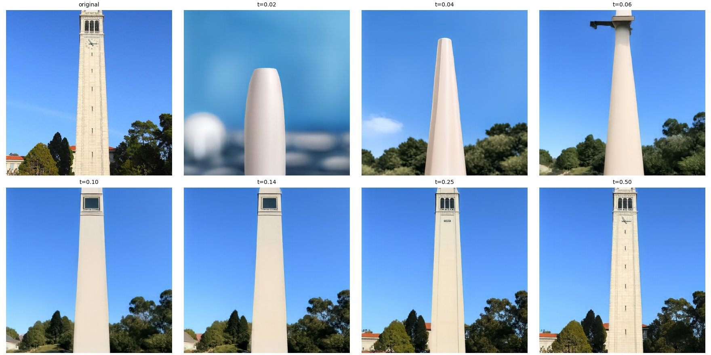
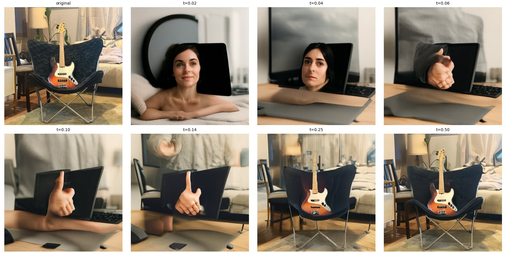
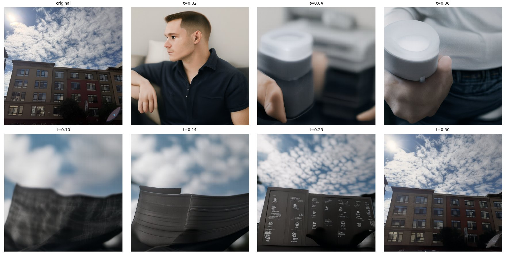
The same procedure projects non realistic images onto the space of real photos. For the web image I used the Mona Lisa: at starting times 0.10 and 0.14 the result is a photorealistic woman in the painting's pose with the same hair, clothes, and background, and the painting's brush texture only returns at 0.25. For the drawings I made a face on a blue background and an ocean with a sun. The face worked well, turning into a realistic man's face on the blue background at 0.06 and 0.10, with the scribbled hair read as a dark hat. The ocean drawing did not become a real scene, because most of the canvas is blank white and the waves are thin blue strokes, so the model read the strokes as lettering and logos on a white surface. A drawing with filled in colors gives the model much more to work with than outlines on white.
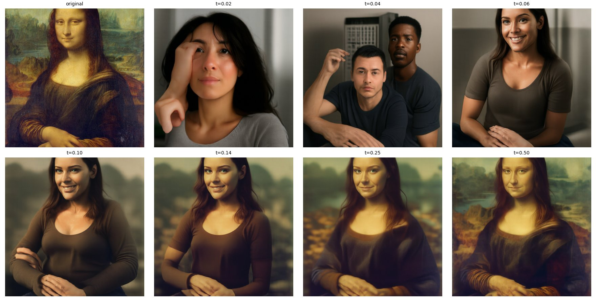
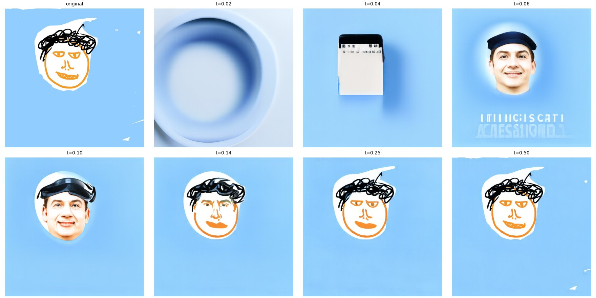
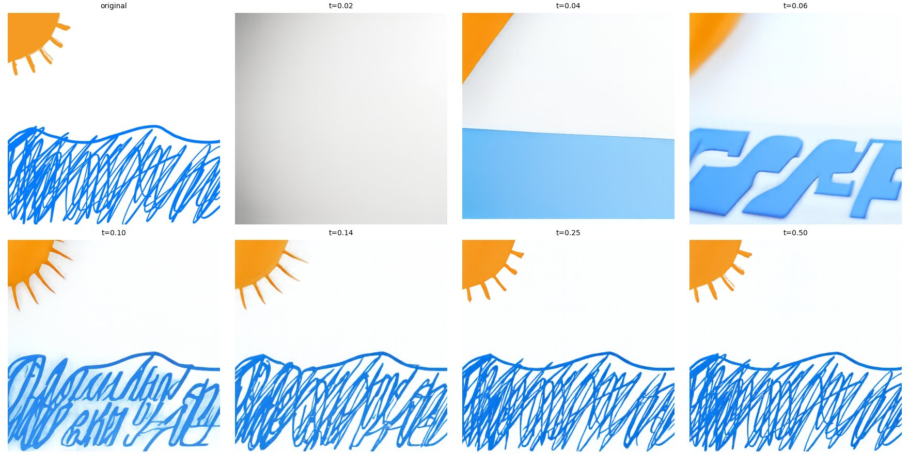
Replacing "a high quality photo" with a prompt describing the desired edit steers the same procedure. At low starting times the prompt wins and the result is an unrelated image of the prompt, at high starting times the original wins, and in between the result keeps the original's layout while its content becomes the prompt. For the Campanile with "a photograph of a lighthouse on a rocky coast", the starting times 0.06 to 0.14 keep the tower's framing and proportions while the surface becomes a lighthouse and the trees become rocks. For the bass with "a photograph of a castle made of stone under a cloudy sky", the low starting times give castles and at 0.25 the chair takes on a stone texture while the guitar stays. For the building with "a photograph of a cat sitting on a chair", the starting times 0.10 and 0.14 put a cat in front of the building's sky.
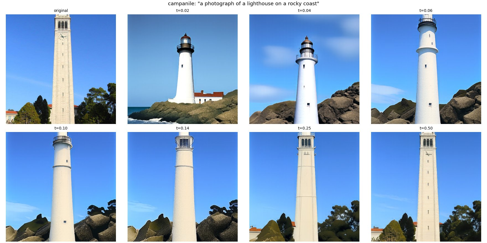
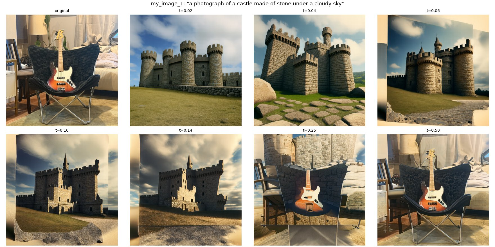
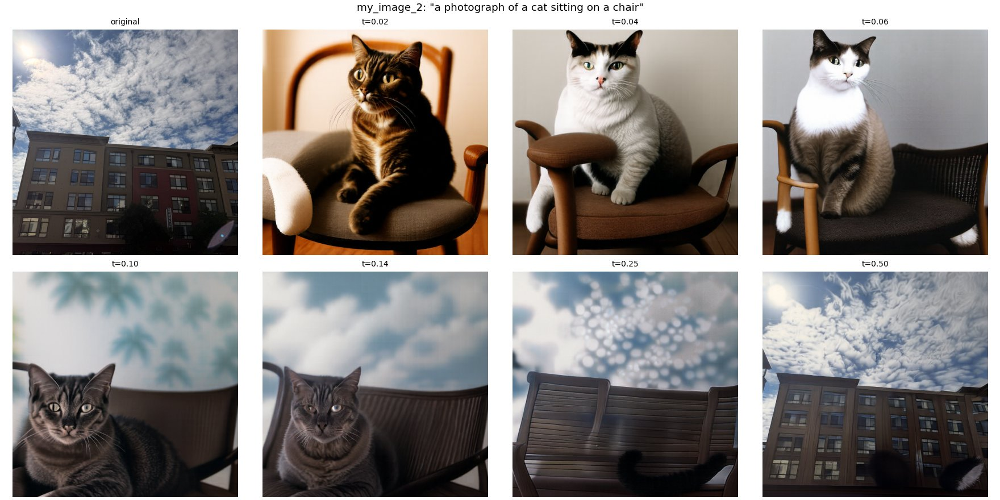
A visual anagram is one image that shows one subject upright and another when rotated 180 degrees. At each Euler step I compute the CFG velocity for prompt A on the image, and the CFG velocity for prompt B on the rotated image, rotate that second velocity back, and average the two, so every step moves the image toward both readings at once. My first pair, "an oil painting of a rabbit" and "an oil painting of a vase of flowers", worked well: upright it is a rabbit, and rotated the rabbit's body becomes a vase and its ears and head become the bouquet, with the rabbit's eye turning into the reflection on the vase. The second pair, "an oil painting of a fox" and "an oil painting of an autumn forest", only partly worked, since the rotated view reads as a forest but the upside down fox face is still visible at the bottom. Pairs where the second subject is a scene rather than another animal worked better, because a scene can bend into whatever shape the first subject leaves behind.
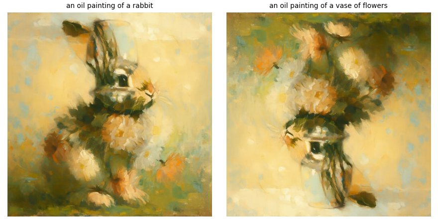
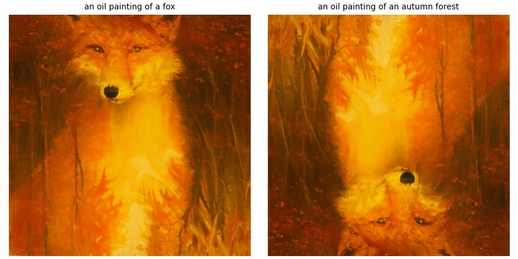
A hybrid image combines the low frequencies of one prompt with the high frequencies of another, as in Project 2, except that here the frequency split is applied to the velocity at every Euler step: v = lowpass(va) + vb − lowpass(vb). The low pass is a Gaussian blur with σ = 16, so the large shapes follow prompt A and the fine detail follows prompt B. I tried "a lithograph of a close-up of an owl's face" with "a lithograph of a dense forest", and "a lithograph of a lion's face" with "a lithograph of a jungle". Up close, the first image reads as a forest and the second as a jungle, and from far away they only somewhat resemble an owl and a lion: the owl survives as the round outline of its face, because the eyes and beak that make an owl recognizable are too small to pass through the low pass, and the lion appears as a shape lying inside the jungle rather than as a face formed by the jungle's light and dark regions. The results would have been stronger with distant prompts whose identity lives in large shapes that fill the frame, such as a skull or a close up portrait, which is why the course's example pairs use a skull, and with close prompts that fill the whole canvas with texture rather than leaving empty space around the subject.
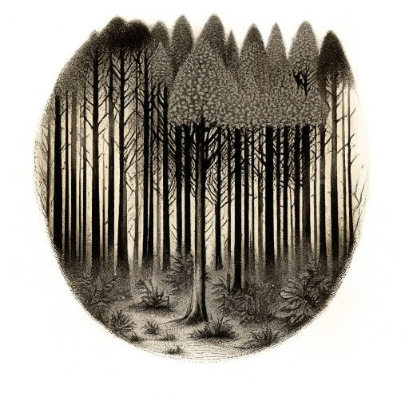
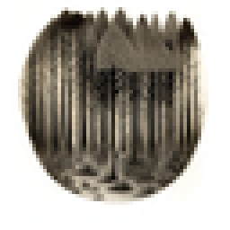
In Part B I build a UNet in PyTorch and train it on MNIST, first as a single step denoiser and then as a flow matching model that generates digits from noise. All of Part B was trained on my laptop's Apple Silicon GPU.
Following the course diagram, the encoder is a ConvBlock that maps the 1 × 28 × 28 input to D channels, then two DownBlocks that halve the size to 14 × 14 and 7 × 7 while going to D and 2D channels, and a Flatten that average pools the 7 × 7 map down to 1 × 1. The decoder is an Unflatten back to 7 × 7, then two UpBlocks that double the size back to 28 × 28, a final ConvBlock, and a plain 3 × 3 convolution back to one channel. Each simple op is a convolution or transposed convolution followed by BatchNorm and GELU, except the Flatten, which is average pooling and GELU. The decoder's inputs are concatenated with the encoder's output at the same size, which gives the decoder the fine detail the downsampling threw away, so the channel counts going into the decoder are 4D, 2D, and 2D. I used D = 128 for the single step denoiser and D = 64 for the flow matching models.
The training pairs come from the noising process z = x + σε with ε ~ N(0, I), applied to clean digits x in [0, 1]. The grid below shows five test digits at σ = 0.0, 0.2, 0.4, 0.5, 0.6, 0.8, and 1.0; by σ = 1.0 the digits are barely visible.
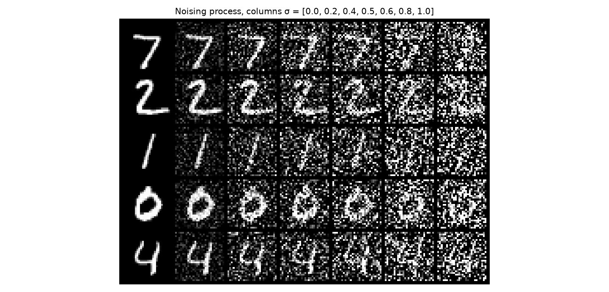
I trained the UNet with D = 128 to map z back to x at σ = 0.5, with an L2 loss, batch size 256, the Adam optimizer at a learning rate of 1e-4, and 5 epochs over the training set. The noise is drawn fresh every time a batch is fetched, so the network never sees the same noisy image twice. The loss drops quickly in the first few hundred steps and then keeps improving slowly. After one epoch the denoised test digits are already readable but slightly soft, and after five epochs they are clean and sharp.
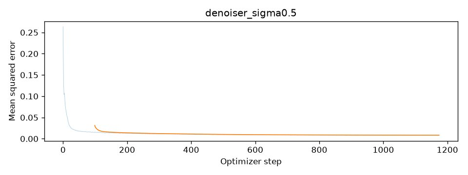
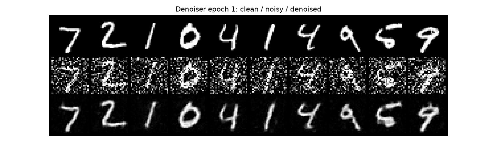
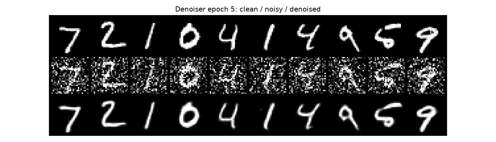
The denoiser was only trained at σ = 0.5, so I tested it on the same test digits at all seven noise levels. It works well up to σ = 0.6, with slightly thickened strokes at low noise since it still tries to remove noise that is not there. At σ = 0.8 the outputs start to break apart and at σ = 1.0 most digits are no longer recognizable, because the inputs are much noisier than anything the network saw during training.
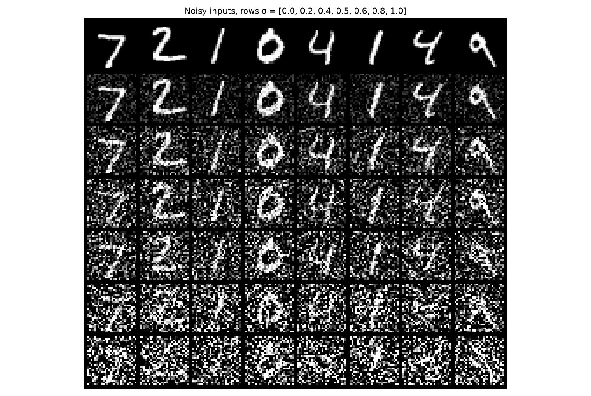
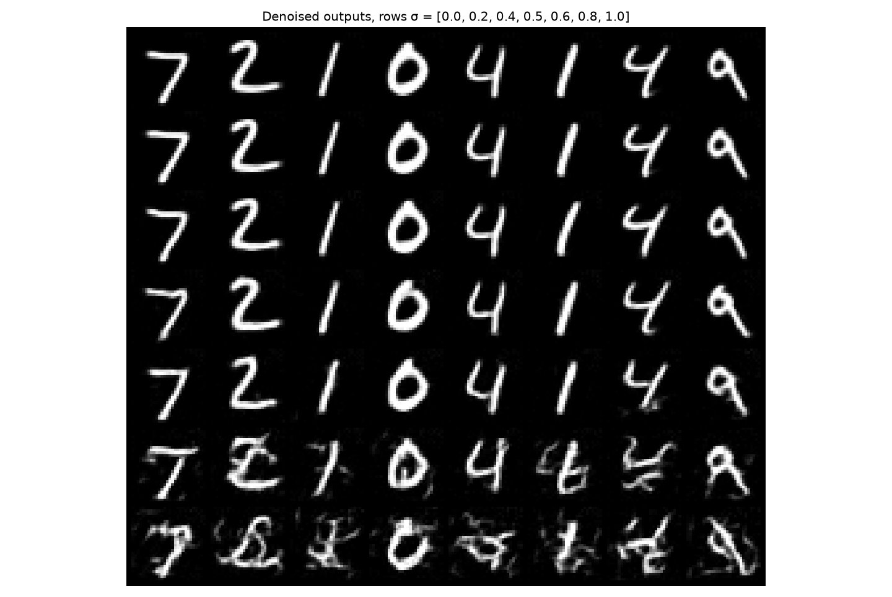
To use the denoiser as a generator, I trained a fresh UNet with the same settings to map pure Gaussian noise to clean digits. The loss plateaus almost immediately at a much higher value than before, and the outputs after both epoch 1 and epoch 5 are the same blurry blob for every input, something like a faint 8 or 9 made of all the digits overlaid. The outputs are identical because the input carries no information about which digit is wanted, so for an MSE loss the best possible prediction is the single image that minimizes the squared distance to all training images, which is the mean of the training set, the centroid of all the digits. The network can only output that average, no matter what noise it is given.
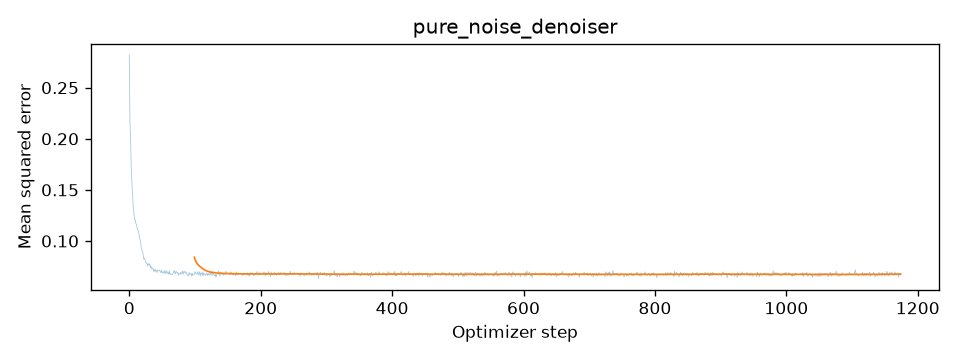
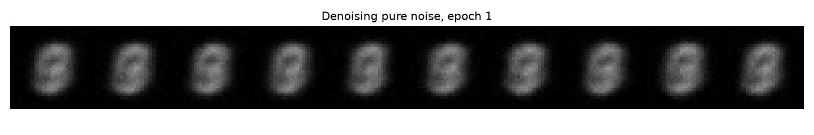
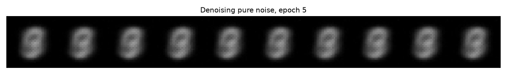
For flow matching, the UNet has to know the time t, so I added two FCBlocks, each a Linear layer with GELU followed by a second Linear layer, that map the scalar t to vectors of size 2D and D. These vectors multiply the unflattened 7 × 7 features and the output of the first UpBlock channel by channel, so the time changes how the network processes the image at the bottleneck and the first decoder level. Training follows Algorithm B.1: for each batch I sample noise x0, a time t, build xt = (1 − t)x0 + t x1, and train the network to predict the flow x1 − x0 with an L2 loss. I used D = 64, batch size 64, 10 epochs, Adam with an initial learning rate of 1e-2, and an exponential learning rate decay with gamma 0.11/10 stepped once per epoch. Sampling follows Algorithm B.2: start from Gaussian noise at t = 0 and take Euler steps of size 1/T, recomputing the flow at every step, with T = 50 for these samples.
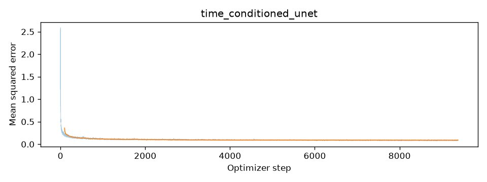
The samples improve from epoch to epoch: after one epoch they are mostly scribbles with a few digit like shapes, after five epochs most are recognizable but misshapen, and after ten epochs most of them are legible digits, although some are still ambiguous, such as the first sample that could be a 2 or a 7. Without any information about which digit to draw, the network sometimes blends features of two digits.
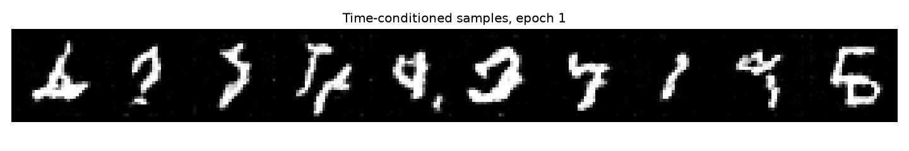
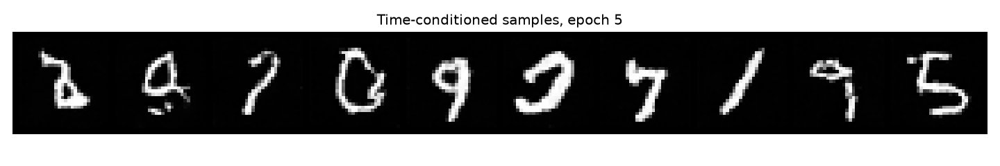
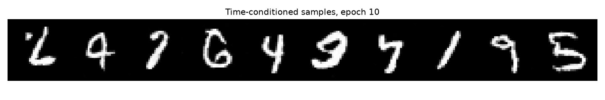
To control which digit is generated, I added two more FCBlocks that take the class label as a one hot vector of length 10. Following the course pseudocode, the class vectors scale the features and the time vectors shift them, so the unflatten output becomes c1 · unflatten + t1 and the first UpBlock output becomes c2 · up1 + t2. During training the one hot vector is set to zero with probability 0.1, so the same network also learns an unconditional flow, which is what makes classifier free guidance possible at sampling time. Training uses the same settings as the time conditioned model, and sampling follows Algorithm B.4: at each of 300 Euler steps I compute the unconditional flow with the zero vector and the conditional flow with the class, combine them as u = uuncond + γ(ucond − uuncond) with γ = 5, and step along the result.
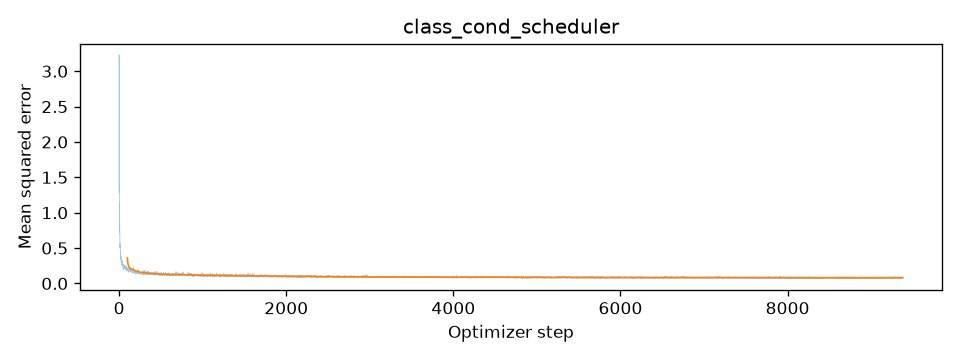
Class conditioning converges much faster than time conditioning alone: after one epoch the digits are already recognizable with a few rough ones, and after five and ten epochs every digit is clean and the four samples of each digit vary in style. The grids below show four instances of each digit 0 to 9 at epochs 1, 5, and 10, sampled with 300 steps.
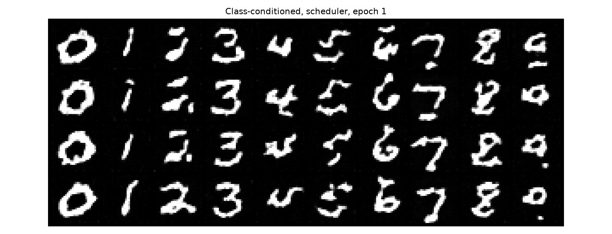
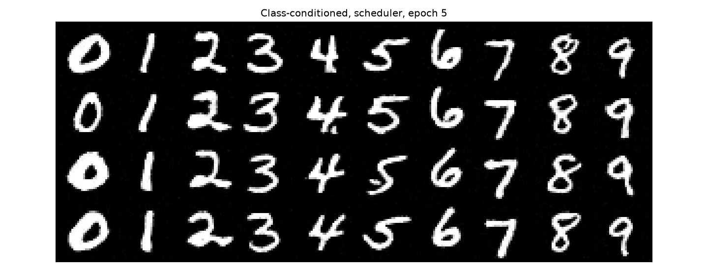
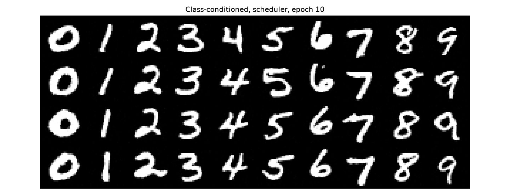
The scheduler starts the learning rate at 1e-2 and decays it by a factor of 10 over the 10 epochs, so it ends at 1e-3. To remove it while keeping the same performance, I trained an identical model with a constant learning rate of 1e-3, the value the scheduled run ends at, for the same 10 epochs. The results are just as good: the final samples at epoch 10 are indistinguishable in quality from the scheduled run, and the epoch 1 samples are actually cleaner, because the scheduled run spends its first epoch at 1e-2, which is high enough to make the early training noisy, while the constant run never takes those large steps. The tradeoff is that the constant rate takes smaller steps from the start, so the loss comes down a little more slowly in the first few hundred iterations, but over 10 epochs on MNIST that difference does not matter.
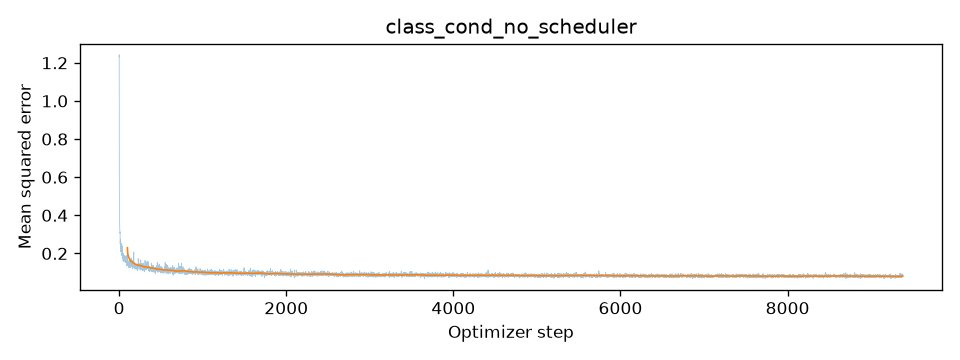
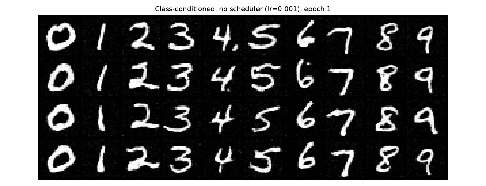
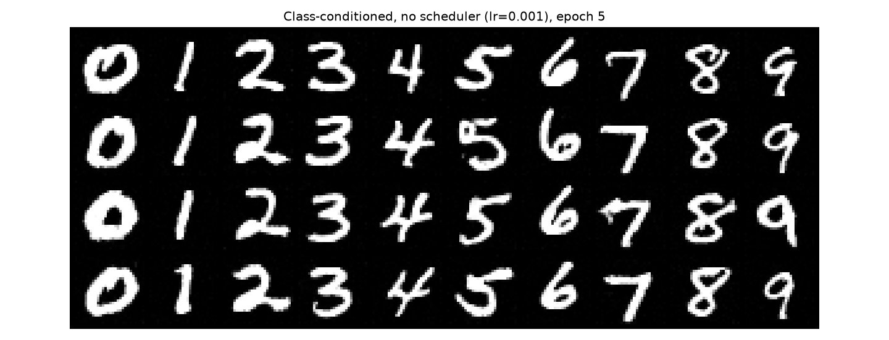
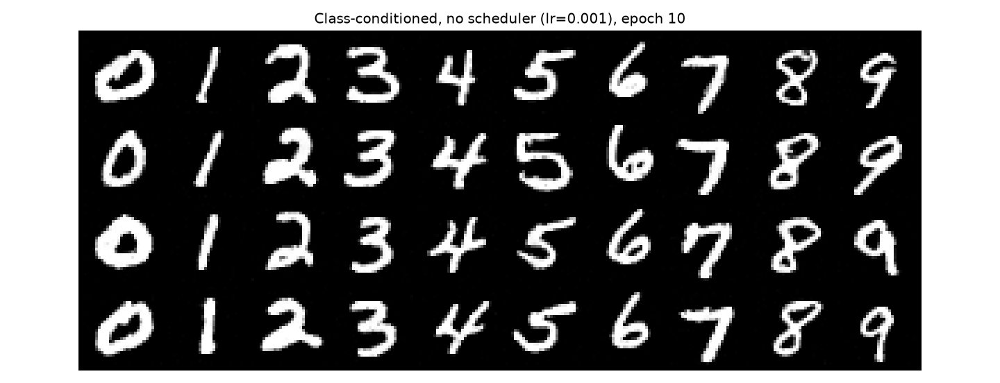